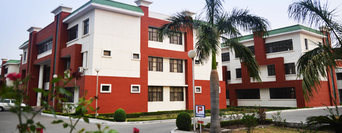
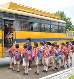
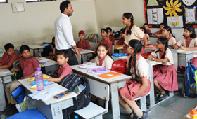
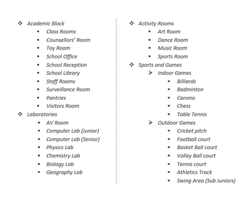
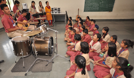

Imformation
Aryaman Vikram Birla Institute of Learning was established on 30th March 2004. It is an English medium co-educational day school located in the pollution-free environs of Haldwani.
The school functions from 0730 hours to 0200 hours and comprises classes Lower KG to XII. It is run by Prakash Education Society, a pioneer in the field of education.
Aryaman Vikram Birla Institute of Learning
-
Support and facilites
Counselling Unit
The school counselling unit looks after the personal, emotional and psychological needs of the students.Career counseling is provided to keep students updated with the latest information about different courses available in different fields, corresponding to their aptitude and ability. Experts are invited to the school to provide professional guidance to the children.
-

Infrastructure Hierarchy

About
Acadamic session
The academic year is divided into two terms. First Term: April to September and Second Term: October to March The school remains closed for the following vacations: Summer Vacation: 40 days Dussehra and Diwali: 8 days Winter Vacation: 10 days Other holidays are as per the list of holidays approved by the School Management.
Beyond acadamics

Co-curricular activities
The choice of a varied programme in Socially Useful Productive Work and co-curricular activities is offered to the students. These activities help in developing the latent potential of a child and are therefore given a significant place in the school timetable. Students participate in various activities that include: Art and Craf Extempore Debating Quizzing Elocution Poetic Symposia Creative Writing DramaticsCultural Centre
The Cultural Centre in the school trains students in Dance, Vocal and Instrumental Music, Art and Craft to inculcate in the children a love for the rich Indian heritage.Activity Clubs
Various activity clubs function within the school and it is compulsory for students to join any one of the following clubs: Dance Club Eco-Club Yoga Club Creative Writing Club General Etiquette Club Aerobics Masks/Toys Making and Papier Mache Club Martial Art Club
Contact
Address:
Raja Rani Vihar,P.O. Anandpur,
Haldwani - 263 139.
Dist. Nainital, Uttarakhand, India.
E-mail: office@avbil.net
Telephone: +919756205510, +915946235788
Fax: +91 1143851762